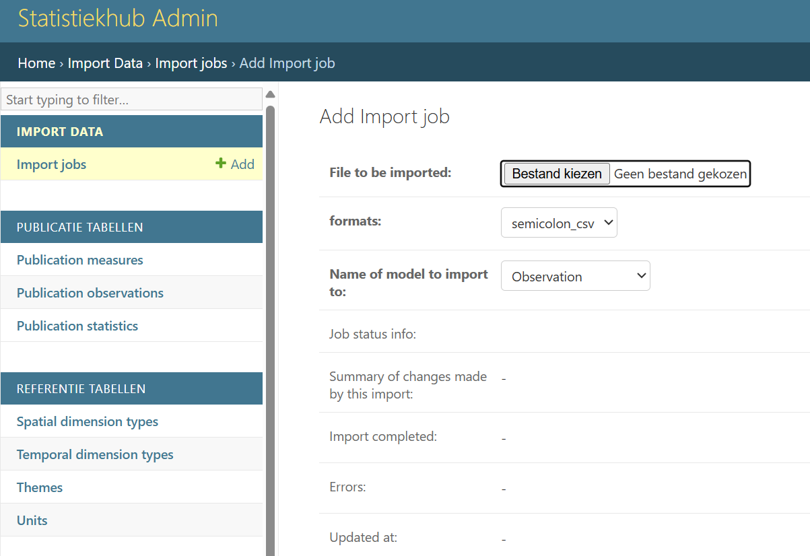
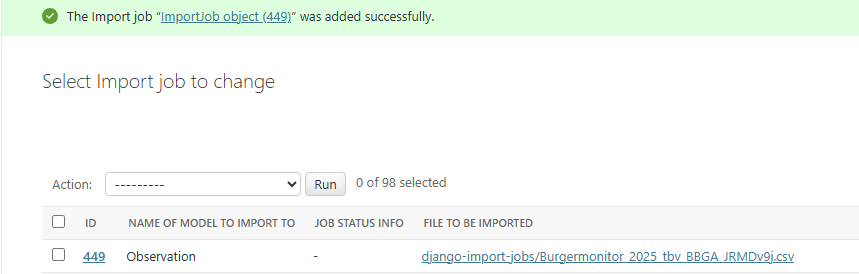
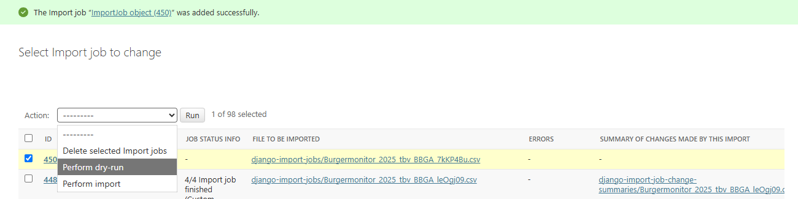

1 Cijfers toevoegen aan de statistiekhub
1.1 Import Jobs
Nieuwe cijfers (observations) voegen we toe of wijzigen we via de beheerwebsite van de statistiekhub. Je kan alleen cijfers toevoegen van indicatoren die zijn toegekend aan jouw team.
Plaats het definitieve csv-bestand in de map Statistiekhub\data_verwerking\04 0 data voor export, zodat we alle gegevens ook centraal hebben opgeslagen in ADW. De databestanden in deze map kunnen ook als voorbeeld dienen voor de opbouw van je eigen bestand.
Zorg dat het bestand voldoet aan heldere naamgeving zoals: <datum>_<team>_cijfers.csv, bijvoorbeeld:
20230208_veiligheid_cijfers.csv
Ga vervolgens naar de beheerwebsite voor het toevoegen of wijzigen van nieuwe cijfers
http://statistiekhub.amsterdam.nl/import_export_job/importjob/
Nadat je bent ingelogd op de beheerwebsite, kan je via de knop add import job het csv-bestand importeren. Je komt op onderstaande pagina terecht.

- Bij
formatkies je voorcsvofsemicolon csv, waarbij semicolon de voorkeur geniet. - Bij
Name of model to importgeef jeobservationaan.
Voordat de cijfers gepubliceerd worden, moeten alle metadata van de indicatoren met de juiste temporal_type, de juiste ruimtelijke indelingen in de Statistiekhub aanwezig zijn. Hierop wordt gecontroleerd bij de import (zie Paragraaf 1.4). Als je cijfers toevoegt van nieuwe indicatoren die nog niet in de hub staan moet je deze met de bijbehorende metadata eerst zelf toevoegen (zie Hoofdstuk 3).
De geleverde cijfers bevatten de volgende kolommen en zijn opgebouwd volgens het principe van een long format: d.w.z dat de dataset slechts één kolom met numerieke waardes bevat.
| kolomnaam | toelichting | notitiewijze |
|---|---|---|
| spatial_code | code van de ruimtelijke dimensie | AA01 |
| spatial_type | type ruimtelijke dimensie | Buurt |
| spatial_date | datum van de ruimtelijke dimensie | 20220324 |
| temporal_date | peildatum of startdatum (bij periode) | 20250101 |
| temporal_type | peildatum of periode | peildatum |
| measure | naam van de indicator | vest_p |
| value | (niet afgeronde) waarde van de indicator | 2,71828 |
1.2 ruimtelijke dimensie
Op basis van de items spatial_code, spatial_type en spatial_date is het mogelijk om een unieke ruimtelijke dimensie te realiseren. Spatial_date (de datum van de gebiedsindeling) is hierbij nodig omdat er soms (grens)wijzigingen en ruimtelijke herindelingen plaatsvinden. De laatste belangrijke gebiedswijziging voor Amsterdam vond plaats op 24 maart 2022, toen Weesp en Amsterdam zijn samengevoegd tot één gemeente. De kans is groot dat je de gebiedsindeling gebruikt op basis van deze laatste wijziging. De spatial_date is in dit geval 20220324. Als je opnieuw historische data aanlevert zal dat in het algemeen ook via de nieuwe gebiedsindeling zijn.
Spatial_type heeft betrekking op het type gebied. De meest gangbare indeling waar onderzoekers statistieken op berekenen zijn:
- Bedrijventerrein
- Winkelgebied
- Buurt
- Wijk
- GGW-gebied
- Stadsdeel
- Gemeente
Het kan voorkomen dat er cijfers gemaakt worden van onbekende gebieden of restgebieden terwijl het gebied onbekend is. Dit komt bijvoorbeeld voor bij verkeerd ingevulde postcodes op enquetes, of als het gebied niet bestaat in een specifieke ruimtelijke indeling, maar wel waardes bevat. Dit geldt bijvoorbeeld voor Westpoort dat geen GGW-gebied is. Voor deze situaties is er per ruimtelijke dimensie een ‘restcode’ bedacht die gebruikt kan worden om de populatie van alle cijfers sluitend te krijgen.
De volgende rest spatial_codes zijn toegestaan bij spatial_type 20220324:
- bij Stadsdeel: Z
- bij GGW-gebied: ZX99
- bij Wijk: ZZ
- bij Buurt: ZZ99
1.3 temporele dimensie
Op basis van de temporal_date en temporal_type is het mogelijk een unieke tijdseenheid te realiseren. Als de indicator een waarde op een bepaald moment laat zien, gebruik dan als temporal_type peildatum. De meeste data zullen als temporal_type peildatum hebben. Dit geldt ook voor enquetedata.
Indien de gegevens over een periode gaan vul dan de betreffende periode in. Voorbeelden van gegevens over een periode zijn bijvoorbeeld het aantal werklozen, geboortes, misdrijven en startende ondernemingen in een jaar, kwartaal of maand. Een statistiek met als temporal_date 20210101 en temporal_type jaar betreft dus een statistiek over het jaar 2021 (van 1 januari 2021 tot 1 januari 2022). Je vult dus de startdatum in van de periode waar je data over gaan. Zoals eerder aangegeven geef je in de metadata ook aan of de data periode of peildatum betreffen. Ook hier geldt dat je een foutmelding krijgt wanneer de data op een andere manier worden aangeboden dan aangegeven in de metadata.
1.4 dry run en import
Druk vervolgens onderaan op save. Daarna kom je terug in het scherm ‘import jobs’ waar het geuploade bestand verschijnt.

Vink vervolgens dit bestand aan en selecteer bij Action: perform dry-run. Met een dry-run wordt getest of de aangeleverde data voldoen aan de voorwaarden. Er verschijnt een foutmelding als dit niet geval is. Bij summary of changes made by this import wordt na aanklikken van de html-link duidelijk waar de fouten zitten.

Als er geen foutmelding verschijnt kan je onder summary of changes de import controleren en bestuderen welke data zijn toegevoegd of geupdated.
Vervolgens vink je weer het bestand aan en selecteer je bij Action: perform import.
De data staan nu echt in de hub.